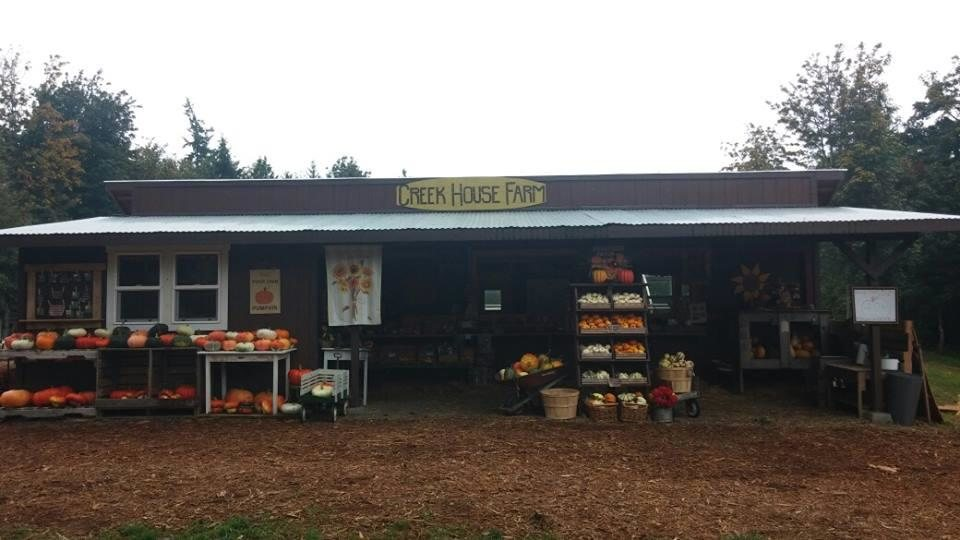

Planning to Visit?
We love to welcome guests to the farm in October! Just so you know...we are a small family farm, and our farm doesn't offer the "big" attractions available at
larger farms. (No roller coasters or catapults here...) Our farm is very well suited to younger children, so if your family/group is heavily weighted to older kids....they
may be disappointed if they are seeking a really-big-farm!
It has been our experience that older kiddos that come along with their families and younger siblings are
happy if they're used to doing things that appeal to all ages. It just depends on the kids, and what they are accustomed to or expecting. You know your group best.
It is truly our hope and our heart that folks are blessed by coming here and sharing our farm.
How It Works
Visits will be by appointment ONLY.
Admission is through an online ticketing system. The cost of admission is $7.50 per person (Infants under 24 months do not need to purchase a ticket, their admission is free).
Each Admission includes:
a. 90 minute farm visit (this includes 10 minutes for arrival and 10 minutes for departure)
b. 1 Farm Ride Token (additional Farm Ride Tokens can be purchased, $2.50 ea or 5 for $10)
Tokens are used for the hay ride
-OR-
the pumpkin barrel ride (for children only) -OR- the super slide
If your group is likely to want to enjoy multiple rides, we recommend picking up extra tokens at check-in to reduce time standing in line.
c. Opportunity to visit and feed farm animals
d. Three (3) water balloons (per paying guest) for pumpkin slingshot (additional balloons can be purchased)
e. Pumpkin trail adventure and puzzle
f. Opportunities for photos
g. A wagon for your group, assigned to you at check in, to be utilized during your visit
h. Opportunity to select a pumpkin to take home (NOTE: Pumpkins are purchased
separately. They are NOT included with admission. You do not have to buy a pumpkin to
visit the farm, but if you want to take one home, you must purchase it before you leave.)
The booking system is set up to allow 25 people to book each 90-minute-block on the farm, which overlap, with check-ins every 30 minutes
(10:00, 10:30, 11:00, etc). This staggers arrival and departure times at the farmstand, while allowing for a maximum of 75-100 guests onsite simultaneously. If you are trying to book an extra-large
group together, we can make your arrival and departure time concurrent instead of staggered. Let us know
what you’re trying to do, and we’ll see how we can make it work on our end.
Additionally, we will not be hosting any parties or field trips. (You are welcome to attend as a group, by online
booking together, but we will not be providing picnic tables for parties, nor field trip organization as we have in prior years.)
Because of the staggered arrival and departure times, it is almost guaranteed that you will be sharing the farm with other groups during your visit. If you desire to reserve the entire farm for your visit, we can arrange that, by booking all the appointments for the time frame you prefer, plus the appointments prior to your visit,
so the farm is entirely empty except for your group (which still cannot exceed the preset capacity). (At $7.50 per booking slot, that could be expensive, but it is possible.)
Gather together with your family or group of close friends, and book your visit times together! Then you're sharing the farm with folks you know!
What we ask of our guests…. PLEASE BE CONSIDERATE OF OTHERS. Crowd sizes will be smaller than previous years. If everyone is kind, and
considerate, understanding, respecting, and protecting of others with their attitudes, words and behaviors… the pumpkin patch will continue to be a pleasant place for everyone… a
chance to make special memories with those close to us.
Let us all work together to create a pleasant atmosphere for a fun and enjoyable pumpkin season!
.png)